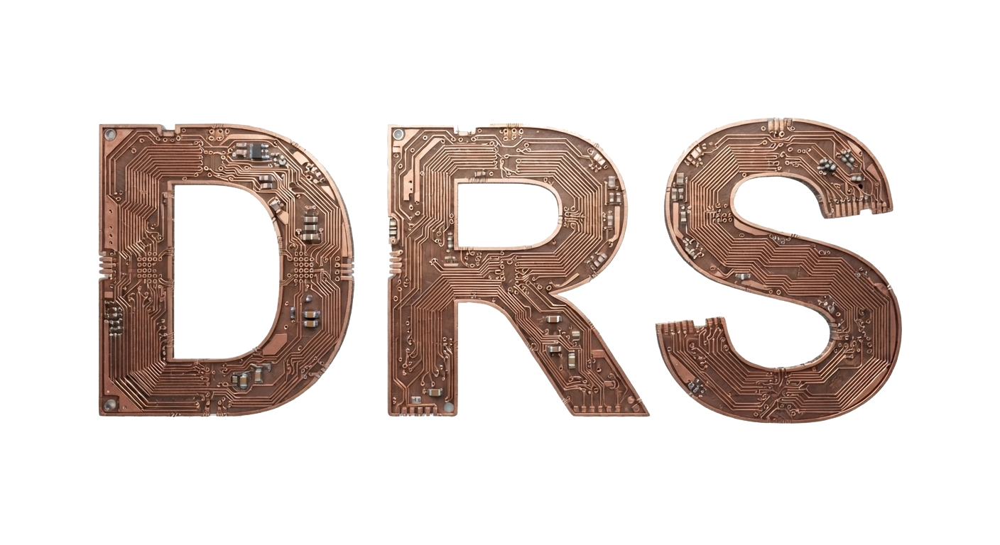
Draw the panel.
Wire it to the plant.
Digital Rebel Studio is a visual studio for HMI, SCADA and IoT screens. Draw the panel, connect it to your machines, and it is ready for the shift: alarms the operator confirms, users who only see what they may touch, a record of who changed what, and history you can page through day by day. The same project file runs on a workstation, a panel PC or a tablet.
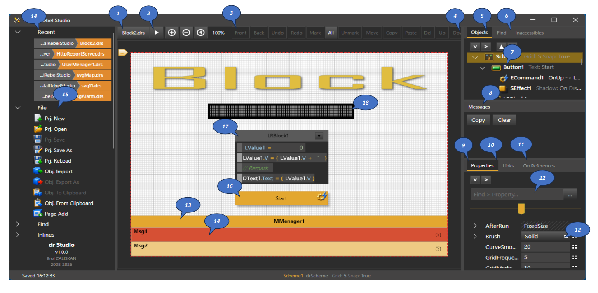
One window: toolbox, canvas, object tree, messages and the property editor — no separate code project, no build step.
- 1Open project. The file you are working on; the tab tells you which one.
- 2Run. Starts the panel right here, exactly as the Runner will run it.
- 3Editing toolbar. Bring to front, send back, undo, redo, mark, select all, move, copy, paste, delete.
- 4Up · Down. Moves the selected object one step in the object order.
- 5Objects. Every object in the project as a tree — what sits inside what.
- 6Find. Locate any object by name, even in a large project.
- 7Selected object. Click it in the tree or on the canvas — both select the same thing, with a short summary beside its name.
- 8Messages. What happened while designing or running, ready to copy.
- 9Properties. Everything about the selected object, changed in place.
- 10Links. Which values this object follows or feeds.
- 11On References. Who else points at this object — check before you delete or rename.
- 12Property search and editors. Type a few letters to find a property; the “…” button opens its own editor for colours, shapes and files.
- 13Message manager. The alarm and message list, placed on the panel like any other component.
- 14Messages on the panel. Each row an alarm, a warning, a notice or an event, coloured by kind. At the top left, the recent projects, one click away.
- 15File. New, open, save, reload, import and export objects, add a page.
- 16Button. An ordinary component — here it starts the logic beside it.
- 17Rung block. Logic you can read: count up and show the result on the display.
- 18Dot matrix display. Shows the value the rung block writes, the moment it changes.
How it fits together
One project file. Two programs. Three targets.
There is no build step and no code generation. The Designer writes a .drs file; the Runner opens exactly that file and executes it. Both are the same application core, so what you see while designing is what runs.
Figure 1 — Designer, project file, Runner and the world outside.
Containers hold tags
A Modbus master, an S7 client, an OPC UA client, an MQTT client or a query is a container. Its tags are added from its own menu, and a compatibility rule keeps the wrong child out. The address map lives with the device that owns it.
One value model
Serial, TCP, UDP, HTTP and Bluetooth all expose the same Value. Swap the transport under a protocol without touching the screen above it.
Import, don't type
Tag Import Sets build a whole Modbus or S7 address map from templates, and an OPC UA client browses the server and imports the nodes you tick. Then the Link Wizard lays out a label and an edit for every tag in one step.
The studio
Every tool in one window
Drag a component in from the tree, set it in the inspector, wire its behaviour in the block editor, pick the method from a searchable list. Nothing here is a plug-in you have to find first.
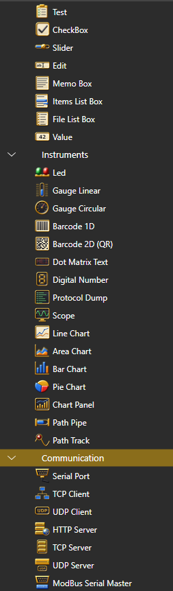

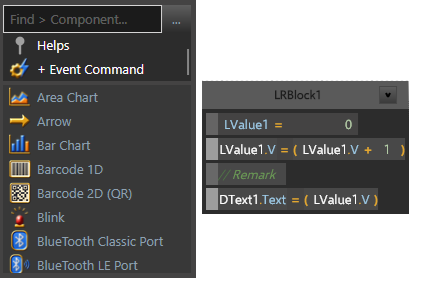
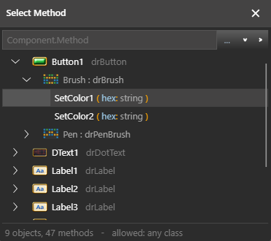
Logic
Three ways to say what should happen
They are not alternatives you pick once. They live in the same scheme, reach the same objects by name, and call each other freely.
Property links
Point one property at another and it stays in sync. Links wake when the watched property changes — which is why a screen carrying hundreds of them stays cheap. Add a condition and it becomes Equal Property IIf.
Rung blocks
A visual mini-language in the spirit of ladder logic: assignments, brackets, operators, constants, remarks and method calls, each added from its own menu. Readable by the technician who has to fix it at 3 a.m.
JavaScript
A complete JavaScript engine is built in — loops, functions, objects, try/catch, JSON, Math. Every component is reachable by its name, and errors come back with the line number the engine actually saw.
A shared Utils Library sits beside all three: one set of string, date, maths and conversion helpers that blocks and scripts both call. Write a helper once, use it in either language.
Projects can call projects. A Scheme Call opens another project file in its own window and passes it parameters with the same SetParam / GetParam calls that blocks and scripts already use. The called project answers whenever it likes: DoOnResult fires OnResult on the caller, and closing its window fires OnClose. Nothing waits and nothing freezes; a large plant can be split into small screens that each do one job.
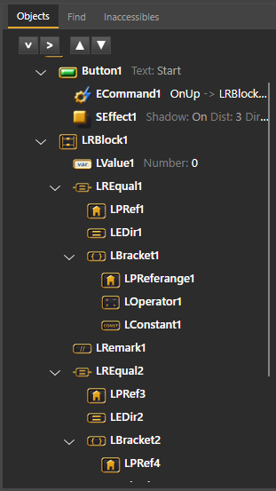
Nothing is hidden behind the drawing
A rung is not a picture of logic — it is the logic. Each part of it is an ordinary named object in the scheme: the statement, the property reference, the direction, the bracket, and inside the bracket the operand, the operator and the constant.
- Selectable and editable. Click a piece in the tree or on the rung; the inspector shows the same object either way.
- Reachable by name. A script can read or drive these objects like any other component.
- Constrained on purpose. Each element offers only the children that may legally go inside it, so a rung cannot be assembled into nonsense.
Operations
Ready for the shift, not just the demo
A screen that shows values is the easy half. The other half is what a plant needs every day: alarms someone answers, people who may only touch their part, a record of every change, and the history behind a problem. All four are components you drop into the project — no second product, no extra server.
Alarms the operator answers
Every message is an alarm, a warning, a notice or an event — decided by two plain questions: does a condition drive it, and must someone confirm it? Alarms stay until they are confirmed, a nuisance can be muted for a set time, and priorities put the worst at the top. Start, end and confirmation are written to a daily log together with the name of the person on duty.
Users see only their part
One user manager rules the whole project. Put people in groups and decide, object by object, what each group may see and what it may change. The same log-in protects the web pages the panel serves, an idle session closes itself after the time you choose, and every log-in, refusal and log-out is recorded.
A record of every change
When a setpoint moves, the log says who moved it, from where — the panel, a web page or a remote client — and what it was before. Values the project writes on its own are kept out, so the log holds decisions made by people, not thousands of automatic updates. Choose the values to watch the same way you choose them for a recipe.
History you can walk through
Pick the days, then page through the hours with Prior and Next the way you scroll a table. Each day gets its own colour, so the moment one night turns into the next morning is plain to see. Zoom in on a spike, zoom out to the whole range, and return to your chosen window with one command. The data comes from a file or a database the project already uses.
Seen in the studio
The same features in real projects, not drawings.
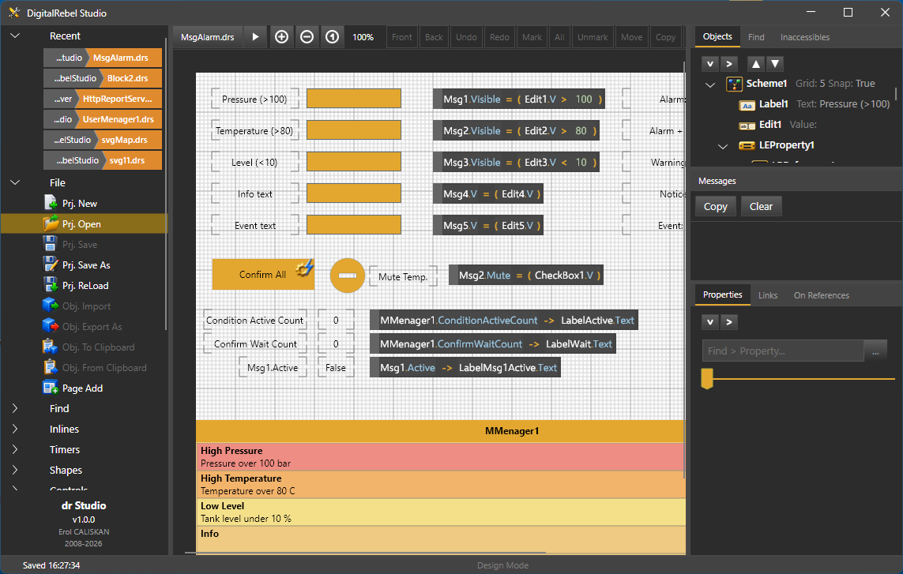
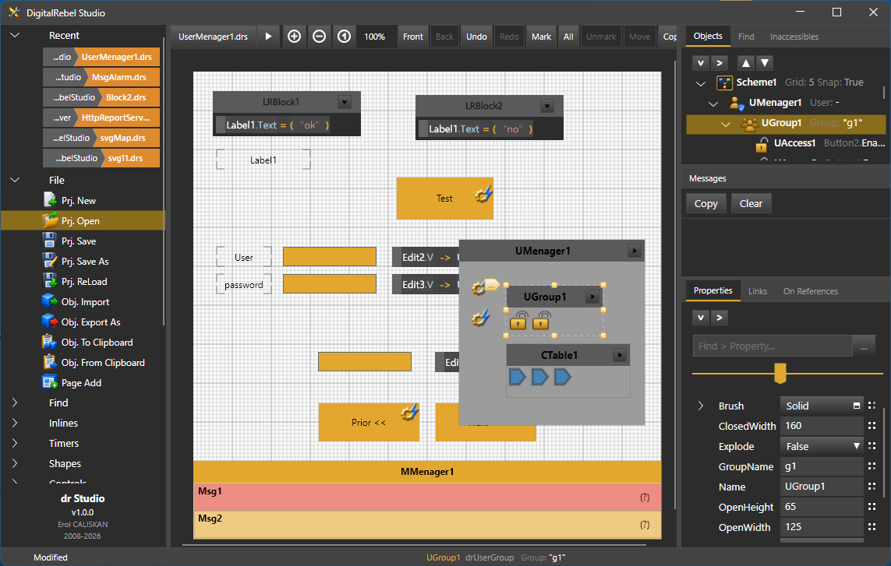

Crossing midnight, clearly
A running trend screen. The operator types the first and last day; the chart shows the chosen window of hours inside them.
- Prior · Next. Page through the hours; pages follow each other without gaps, so the change of day shows up inside a page.
- Each day in its own colour. The new day's date appears in its colour on the axis and in the title.
- Zoom In · Out · All · Ignore. Look closer, see everything, or go back to the window you set.
- Now. Jumps to the latest record.
Components
90 components, drawn and ready
Every item below is a real entry in the toolbox — drop it on the canvas, set its properties, and it works. Nothing to fetch, nothing to wrap, no package manager involved.
Instruments
17Readouts for the plant floor. Gauges, charts and displays are value-driven: point them at a tag and they follow it. The Trend Chart looks back instead — at the history of those same values.
- Gauge Circular
- Gauge Linear
- Led
- Scope
- Line Chart
- Area Chart
- Bar Chart
- Pie Chart
- Chart Panel
- Trend Chart
- Digital Number
- Dot Matrix Text
- Barcode 1D
- Barcode 2D (QR)
- Protocol Dump
- Path Pipe
- Path Track
Edits
9Everything the operator touches. Each edit carries a typed value — string, number or date — so a keypad entry lands in a tag already converted.
Shapes, Effects, Controls, Timers, SVG
17The drawing and framing layer. Shapes take any outline; effects attach to any parent. Bring in a ready-made drawing — a tank, a valve, a whole plant layout — and it fills its box cleanly; then make its parts move: a fan turns on its hub, a tank fills to the level, a valve changes colour, and a click on a part tells the project which one was picked. Scheme Call opens another project in its own window, hands it parameters and gets the result back as an event.
Script & logic
7Script, Rung Block and the Utils Library stand on the scheme as named objects. Dll Loader brings the functions of your own compiled library into blocks and scripts. The three Link components run without a scan — they react to a property changing.
- Script
- Rung Block
- Utils Library
- Dll Loader
- Link Property
- Equal Property
- Equal Property IIf
Tools, Database, Reports, Inlines
13Msg Manager runs the alarms, User Manager decides who may do what, and Change Logger keeps the record of who did it. Recipes carry live pointers to any value on the scheme. Database fields flash as they are read and written while you test, so you can watch the data move.
- Msg Manager
- User Manager
- Change Logger
- Recipes
- Json Format
- Text Logger
- Database
- Query
- Db Tag
- Db Param
- Csv Table
- Report
- Event Command
Connectivity
Down to the register, up to the browser
Twenty-seven of the 90 components are connectivity. DRS is a client to your plant and, at the same moment, a server to whoever needs the data next.
Figure 2 — from the register on a PLC to a browser tab, without a second product in the middle.
Industrial
- Modbus RTU
- Modbus TCP
- Siemens S7
- OPC UA
- Tag import sets
Masters keep their own tag list; each tag is an address, a data type and a scan rule. Import sets generate the whole map from templates.
Network
- TCP client · server
- UDP client · server
- HTTP client · server
- MQTT
- JT client · server
- LZ client
- SMS
The panel can answer web requests itself, with your own blocks and scripts deciding the reply — a gateway in minutes, not a separate service to deploy. The user manager guards it with the same log-in as the screen.
Board level
- Serial / USB
- GPIO
- PWM
- SPI
- I2C
- Bluetooth Classic
- Bluetooth LE
Pins, buses and ports on a single-board computer work straight away — nothing extra to install on the board.
OPC UA client
- Encrypted or open
- Anonymous · user name
- Browse & import
Connect to an OPC UA server, secured or not, and browse what it offers. Tick the values you need and they arrive as tags — no node IDs to type. Certificates are handled for you: the client makes its own and remembers the server after the first contact.
IP camera
- MJPEG over HTTP
- JPEG snapshot
- RTSP
- ONVIF
- PTZ
- Basic · Digest · HTTPS
A live camera image on the panel, next to the tags it watches. ONVIF finds the cameras on the network, lists their profiles and drives pan, tilt, zoom and presets from a block or a script. Phone apps such as DroidCam work out of the box. The camera reconnects by itself after a drop, and SaveSnapshot writes the current frame to a file. H.264 streams are on the roadmap; until then an ONVIF camera that only offers H.264 is shown through its snapshot feed.
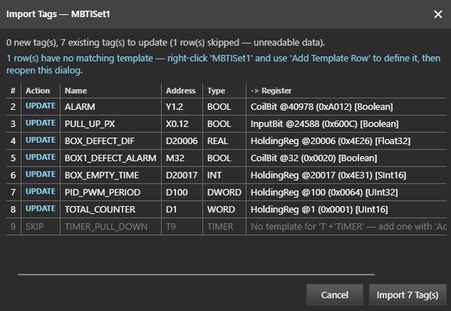
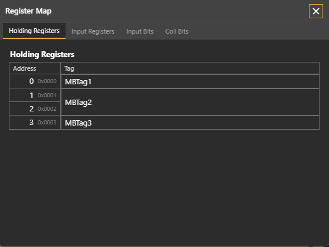
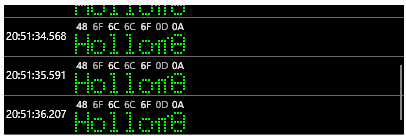
Test without the hardware
Alongside DRS, small test servers are being built that stand in for a PLC, an OPC UA server and an IP camera, so a panel can be built and checked before the real device is on the desk. They are not distributed yet. Each one sits in the Windows notification area with its own badge; its menu opens the log or closes the server. A matching test project comes with each server, and every tag's description states the value the server should return.
S7 Test Server
- ISO-on-TCP · port 102
- DB1 – DB3
- I · Q · M
- Timers · counters
Answers reads and writes like an S7 PLC. DB1 is seeded with every data type, and a few counters and a toggling bit change every second so a live panel has something to show.
OPC UA Test Server
- port 48400
- Every security mode
- User login
- 14 data types
Offers every security mode the client supports, anonymous and user-name login, one tag per data type and a live counter.
IP Camera Test Server
- MJPEG · snapshot
- RTSP
- ONVIF · PTZ
- WS-Discovery
- Digest
Streams a generated test picture with a frame counter and a clock over HTTP and RTSP, answers ONVIF discovery, profile and PTZ requests, and protects its secure paths with Digest authentication.
Data & reports
Log it, query it, print it
A panel that cannot produce a shift report is half a panel. DRS carries its own database clients and a banded report designer, so the paperwork lives in the same project as the screen.

A real report designer
- Bands, not boxes. Page header, group header, data band, detail band, group footer and summary — the structure a printed report actually has.
- Components inside bands. A gauge, a chart or a QR code is not a special “report object”: the same component you put on the screen goes in the band.
- Pagination that behaves. Groups break, headers repeat, totals land where they should.
- Six outputs. Print directly, or write PDF, XLSX, DOCX, HTML or plain text.
- History on the screen, too. The same tables that feed a report feed the Trend Chart: the operator picks the days and pages through them without leaving the panel.
Data sources
- Firebird
- PostgreSQL
- MySQL
- SQL Server
- CSV Table
Query results bind straight to components. Parameters go the other way — an operator's entry becomes a bound query parameter, not string concatenation.
Platforms
Design once, run where you need it
The Designer runs on desktop. The Runner goes further — the same project file opens on a workstation, a panel PC or a tablet. A browser can still watch and drive a running panel through the Remote Control server.
Windows
x64 and ARM64
Designer + RunnerLinux
x64 and ARM64 · AppImage
Designer + RunnerAndroid
Phones and tablets
RunnerUnder the hood
Built to stay yours
Industrial software outlives the fashions it was written in. DRS is engineered so a panel you build today still opens, still runs and still prints in ten years.
No account to lose, no subscription to lapse, no service to be discontinued. A folder, an executable and your project file.
- Nothing borrowed that can be taken away. Everything DRS needs travels with it. No download to disappear, no version drift, no licence surprise.
- Offline-first. No account, no telemetry, no licence server. Nothing phones home, and nothing stops working when the network does.
- One file to deploy. The Runner publishes as a single self-contained executable — copy it to the panel PC and start it.
- One codebase, three targets. Windows, Linux and Android builds share the same component source, so a fix lands everywhere at once.
- Smooth on small hardware. Panels draw directly on the screen, not inside a hidden browser, so they stay responsive on a modest panel PC.
- Measured, not guessed. A rung loop of 100,000 iterations writing a live value runs in about 130 ms in the Runner, down from 700 ms and with a quarter of the memory. Every optimisation is timed before it is kept.
- Every project is sealed. The Designer, a test run and a called project each keep their own state, so stopping or failing one never touches another.
- Old projects keep opening. The project format tolerates components and properties that have moved on — a scheme saved a year ago still loads.
Gallery
See it at work
Screenshots from real projects — gauges, charts, cameras, web reports, logic and the studio. New ones are added as DRS grows.

Roadmap
Where DRS is heading
DRS is under daily development. Here is the direction of travel.
Studio and daily operation
The Designer, the Runner and the 90-component toolbox. Alarms, users and access, the change log and history trends. Plant connections, IP cameras, live drawings, databases and the report engine.
First public builds
Downloadable Windows and Linux packages, the Android runner, worked example projects and getting-started documentation. Built-in recording of history, and a ready alarm-history screen.
Faster to a finished panel
Describe the panel you need and let the studio build a first version for you. A browser view of a running project, a library of process symbols — tanks, valves, pumps, motors — and more camera formats.
Download
Not yet — but soon
If you work with panels, PLCs or instrumentation and want to try it early, get in touch — feedback from the shop floor shapes the roadmap, and early testers get the first builds.